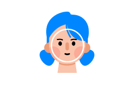
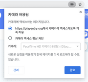

AI 블록 > 얼굴 인식

카메라로 입력되는 이미지(영상)을 통해 사람의 얼굴을 인식하는 블록입니다.
인공지능이 얼굴 각 부위의 위치나, 표정 등을 통해 유추한 나이, 성별, 감정 등을 인식하는 것을 간단히 경험해 볼 수 있어요!
- 이 블록은 카메라 연결이 꼭 필요한 블록입니다. 데스크탑의 경우 별도 웹캠을 연결해 주세요.
※ 카메라를 통해 입력되는 영상은 절대로 서버에 저장되거나 외부로 공유되지 않습니다. - 이 블록은 인터넷 익스플로러 브라우저와 iOS 운영 체제에서는 동작하지 않습니다.
인터넷 브라우저의 경우, 안정적인 동작을 위해 구글 크롬 또는 네이버 웨일 브라우저의 사용을 권장합니다. - 카메라를 연결했는데도 블록이 동작하지 않거나, 영상이 제대로 입력되지 않는 경우 인터넷 브라우저의 설정을 변경해 카메라 사용을 허용해주세요.
(크롬 브라우저의 경우, 주소 표시줄 오른쪽의 카메라 아이콘을 클릭하거나 ‘설정 > 개인정보 및 보안 > 사이트 설정 > 카메라’ 에서 엔트리 사이트의 카메라 사용을 허용해 주세요.)

얼굴 인식 블록이 인식할 수 있는 부위는 아래와 같습니다.
왼쪽 눈,오른쪽 눈,코,왼쪽 입꼬리,오른쪽 입꼬리,윗 입술,아랫 입술
1. 비디오 화면 [보이기]
카메라가 촬영하는 화면(앞으로 ‘비디오 화면’이라고 부를게요)을 실행 화면에서 보이거나 숨깁니다.
목록 상자( )를 클릭하면 보일지 숨길지 고를 수 있어요.
)를 클릭하면 보일지 숨길지 고를 수 있어요.
2. [1번] 카메라로 바꾸기
비디오 화면을 촬영할 카메라를 선택한 카메라로 바꿉니다.
목록 상자( )를 클릭하면 기기에 연결된 카메라 목록이 표시되고, 이 중에서 하나를 선택할 수 있어요.
)를 클릭하면 기기에 연결된 카메라 목록이 표시되고, 이 중에서 하나를 선택할 수 있어요.
3. 카메라가 연결되었는가?
기기에 카메라가 연결되어 있다면 참으로, 아니라면 거짓으로 판단하는 블록입니다.
4. 비디오 화면 [좌우] 뒤집기
비디오 화면을 실행 화면에서 좌우(가로) 또는 상하(세로)로 뒤집습니다.
기본 화면은 거울을 보는 것처럼 좌우로 뒤집어져 있어요.
목록 상자( )를 클릭하면 뒤집을 방향을 선택할 수 있어요.
)를 클릭하면 뒤집을 방향을 선택할 수 있어요.
5. 비디오 투명도 효과를 (0) 으로 정하기
비디오 화면의 투명도 효과를 입력한 숫자로 정합니다. 0%~100% 범위에서 조절할 수 있어요.
이 블록을 사용하지 않았을 때 기본 투명도 효과는 50%입니다.
6. [자신] 에서 감지한 [움직임] 값

비디오 화면에서 오브젝트나 실행 화면이 감지한 움직임 정도를 가져오는 값 블록입니다.
목록 상자( )를 클릭하면 감지할 대상과 감지할 값을 선택할 수 있어요.
)를 클릭하면 감지할 대상과 감지할 값을 선택할 수 있어요.
- 감지할 대상 (첫 번째 목록 상자)
자신: 해당 오브젝트에서 움직임을 감지합니다.실행 화면: 촬영하는 전체 화면에서 움직임을 감지합니다.
- 감지할 값 (두 번째 목록 상자)
움직임: 움직임이 작고 느릴수록 0 에 가깝고, 크고 많을수록 큰 수를 가져옵니다.방향: 오른쪽 또는 위쪽으로 움직일수록 양수로 커지고, 왼쪽 또는 아래쪽으로 움직일수록 음수로 커지는 수를 가져옵니다.
7. 얼굴을 인식했을 때
얼굴을 인식했을 때 아래의 블록이 동작합니다.
한 번 인식을 시작하고 연속적으로 인식이 유지되면 다시 동작하지 않지만, 얼굴이 새롭게 인식되는 순간 다시 블록이 동작합니다.
얼굴 인식을 시작하지 않았다면 블록이 동작하지 않아요.
8. 얼굴 인식 [시작하기]
얼굴 인식을 시작하거나 중지합니다.
얼굴을 인식하려면 꼭 이 블록을 통해 인식을 시작해야 해요.
목록 상자( )를 클릭하면 인식을 시작할지 중지할지 선택할 수 있어요.
)를 클릭하면 인식을 시작할지 중지할지 선택할 수 있어요.
9. 인식한 얼굴 [보이기]
인식한 얼굴을 실행 화면에서 보이거나 숨깁니다.
‘보이기’를 선택하면 인식한 얼굴의 각 부위를 외곽선의 형태로 표시해요.
목록 상자 ( )를 클릭하면 인식한 형태를 보일지 숨길지 고를 수 있어요.
)를 클릭하면 인식한 형태를 보일지 숨길지 고를 수 있어요.
10. 얼굴을 인식했는가?
얼굴을 인식했다면 참으로, 아니라면 거짓으로 판단하는 블록입니다.
얼굴 인식을 시작하지 않았다면 항상 거짓으로 판단해요.
11. 인식한 얼굴의 수
인식한 얼굴이 몇 개인지를 가져오는 값 블록입니다.
최대 4개의 얼굴을 인식할 수 있습니다.
12. [1] 번째 얼굴의 [왼쪽 눈] (으)로 이동하기
이 오브젝트가 얼굴의 선택한 부위로 이동합니다.
목록 상자( )를 클릭하면 인식한 순서의 얼굴과 부위를 선택할 수 있어요.
)를 클릭하면 인식한 순서의 얼굴과 부위를 선택할 수 있어요.
13. (2) 초 동안 [1] 번째 얼굴의 [왼쪽 눈] (으)로 이동하기
입력한 시간( )동안 이 오브젝트가 얼굴의 선택한 부위로 이동합니다.
)동안 이 오브젝트가 얼굴의 선택한 부위로 이동합니다.
목록 상자( )를 클릭하면 인식한 순서의 얼굴과 부위를 선택할 수 있어요.
)를 클릭하면 인식한 순서의 얼굴과 부위를 선택할 수 있어요.
14. [1] 번째 얼굴의 성별이 [여성] 인가?
얼굴의 성별과 선택한 성별이 같다면 참으로, 아니라면 거짓으로 판단하는 블록입니다.
15. [1] 번째 얼굴의 나이 [=] (10) 인가?
얼굴의 나이와 입력한 나이를 비교한 결과가 옳다면 참으로, 아니라면 거짓으로 판단하는 블록입니다.
16. [1] 번째 얼굴의 감정이 [분노] 인가?
얼굴의 감정과 선택한 감정이 같다면 참으로, 아니라면 거짓으로 판단하는 블록입니다.
선택할 수 있는 감정
분노,혐오,두려움,행복,무표정,슬픔,놀람
17. [1] 번째 얼굴의 [왼쪽 눈]의 [x] 좌표
얼굴 부위의 x 또는 y 좌표를 가져오는 값 블록입니다.
얼굴을 인식하지 않을 때는 0 을 가져와요.
목록 상자( )를 클릭하면 인식한 순서의 얼굴과 부위를 선택할 수 있어요.
)를 클릭하면 인식한 순서의 얼굴과 부위를 선택할 수 있어요.
18. [1] 번째 얼굴의 [성별]
얼굴의 특징을 가져오는 값 블록입니다.
얼굴의 특징을 가져오려면 꼭 얼굴 인식을 시작한 상태여야 해요. 얼굴을 인식하지 않을 때는 0 을 가져와요.
목록 상자( )를 클릭하면 얼굴의 성별/나이/감정을 선택할 수 있어요.
)를 클릭하면 얼굴의 성별/나이/감정을 선택할 수 있어요.